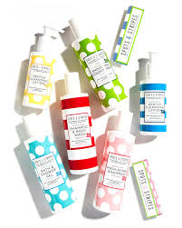
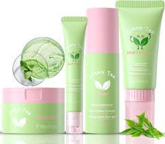
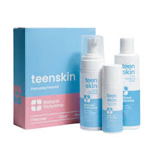

1. Turmeric: It’s found in every household and is a commonly used spice in Indian kitchens. Add 1/4th of turmeric in 2 spoons of besan, and add milk/water to it. Apply this pack to your face or skin. Scrub with gentle strokes. Wash it off with normal water.
2. Lemon: again, another item we generally find in our refrigerators. Not only does drinking lemon juice detoxify our body, but applying it to the skin gives glowing skin. Apply lemon juice on dark areas using a cotton ball and wash it after 10 minutes.
3. Cucumber: We would have seen people putting cucumber slices on the eyes to reduce puffiness and dark circles. Applying Cucumber juice to the skin helps in hydrating and cleaning the skin.
4. Banana Peels: Don’t just throw them away; rubbing the peels of banana helps in skin lightening.
5. Coconut Oil: Fatty acids and antioxidants abound in coconut oil. It improves practically all skin types and relieves irritation. It works well as a sunscreen, moisturizer, and cleaner. Additionally, it prevents acne on our skin. Coconut oil massages regularly keep our skin healthy and radiant.